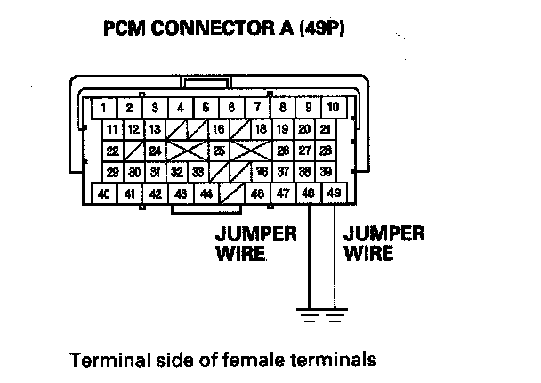
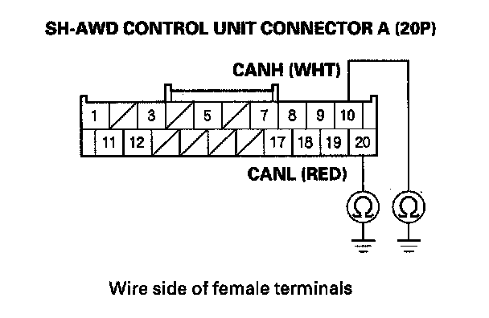

DTC 41-1
DTC 41-1: F-CAN Malfunction (Lost Communication With Power Control Module (PCM))NOTE: Before you troubleshoot, review the general troubleshooting information.
1. Turn the ignition switch ON (II).
2. Check for DTCs in the PGM-FI system with the HDS.
Are there any PGM-FI DTC's indicated?
YES - Go to the indicated DTC's troubleshooting.
NO - Go to step 3.
3. Clear the DTC with the HDS.
4. Start the engine.
5. Check for DTCs with the HDS.
Is DTC 41-1 indicated?
YES - Go to step 6.
NO - Intermittent failure, the system is OK at this time. Check for intermittent open between the SH-AWD control unit connector terminals A10 and A20 and the PCM connector terminals A48 and A49.
6. Turn the ignition switch OFF.
7. Jump the SCS line with the HDS.
NOTE: This step must be done to prevent PCM damage.
8. Disconnect PCM connector A (49P).
9. Connect PCM connector terminals A 48 and A 49 to body ground with jumper wires.

10. Disconnect SH-AWD control unit connector A (20P).
11. Check for continuity between SH-AWD control unit connector terminals A10 and A20 to body ground.

Is there continuity?
YES - Update the SH-AWD control unit if it does not have the latest software or substitute a known-good SH-AWD control unit and recheck. If the symptom/indication goes away with the updated SH-AWD control unit, troubleshooting is complete. If the symptom/indication goes away with a known-good SH-AWD control unit, replace the original SH-AWD control unit.
NO - Repair open in the wires between the SH-AWD control unit and the PCM.